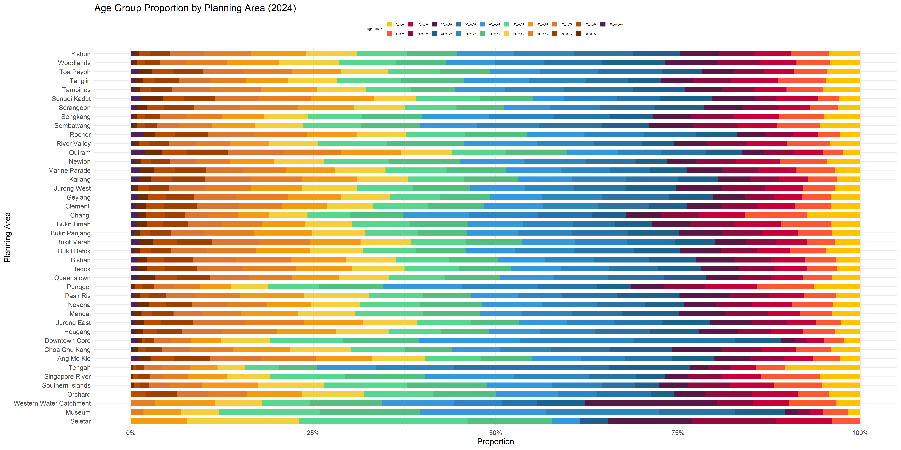
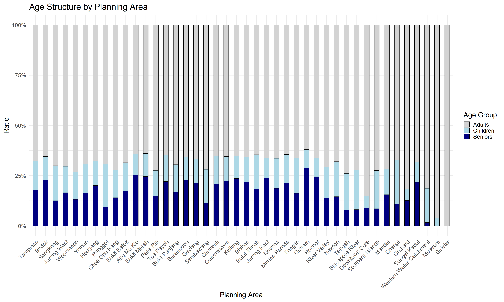

echo = FALSE
pacman::p_load(
tidyverse, haven, knitr,
patchwork, ggthemes, scales,
ggridges, ggpubr, gganimate,
ggdist, ggtext, ggalt,
cowplot, ggnewscale,
sf, viridis
)Take-home Exercise 1 - Data Visualizations in Singapore Residence by Planning Area
1. Environment Set-up
1.1 Background Information and Data Source
The data set is downloaded from “https://www.singstat.gov.sg/”
File Name: “Singapore Residents by Planning Area / Subzone, Single Year of Age and Sex, June 2024”
1.2 Data Processing
Importing Data and Install Packages
Loading and Installing Packages
Read the file and Clean BOM
raw_lines <- readLines("respopagesexfa2024/respopagesexfa2024.csv", encoding = "UTF-8")
writeLines(raw_lines, "respopagesexfa2024/respopagesexfa2024_clean.csv", useBytes = TRUE)Read the Clean File
echo = FALSE
df <- read_csv("respopagesexfa2024/respopagesexfa2024_clean.csv")Rows: 75696 Columns: 7
── Column specification ────────────────────────────────────────────────────────
Delimiter: ","
chr (5): PA, SZ, AG, Sex, FA
dbl (2): Pop, Time
ℹ Use `spec()` to retrieve the full column specification for this data.
ℹ Specify the column types or set `show_col_types = FALSE` to quiet this message.Transform the Pop Data into Numbers and Remove NA
df_clean <- df %>%
mutate(Pop = as.numeric(Pop)) %>%
filter(!is.na(Pop) & Pop > 0)2. Background and Notes
A local online media company that publishes daily content on digital platforms is planning to release an article on demographic structures and distribution of Singapore in 2024.
df <- tibble(
PA = c("Planning Area"),
SZ = c("Subzone"),
AG = c("Age Group"),
Sex = c("Sex"),
FA = c("Floor Area of Residence"),
Pop = c("Population"),
Time = c("Resident Count(Population)")
)
df %>%
knitr::kable(caption = "Column Information") %>%
kableExtra::kable_styling(
bootstrap_options = c("striped", "hover", "bordered"),
full_width = FALSE
)| PA | SZ | AG | Sex | FA | Pop | Time |
|---|---|---|---|---|---|---|
| Planning Area | Subzone | Age Group | Sex | Floor Area of Residence | Population | Resident Count(Population) |
2.1 Task Objective
Assuming the role of the graphical editor of the media company, you are tasked to prepare at most three data visualizations for the article.
Note:
For June 2024, Planning Areas refer to areas demarcated in the Urban Redevelopment Authority’s Master Plan 2019.
Data from 2003 onwards exclude residents who have been away from Singapore for a continuous period of 12 months or longer as at the reference period.
The figures have been rounded to the nearest 10.
The data may not add up due to rounding.
2 Distribution Analysis -
Summarize the Pop Data by Planning Area
df_summary <- df_clean %>%
group_by(PA) %>%
summarise(Total_Pop = sum(Pop)) %>%
arrange(desc(Total_Pop))The code below plots the distributions of population by removing lowest 10 values from the data
X: Planning area
Y: Total population by area in 2024
bottom10_pa <- df_summary %>%
slice_min(Total_Pop, n = 10) %>%
pull(PA)
df_summary_filtered <- df_summary %>%
filter(!PA %in% bottom10_pa)
ggplot(df_summary_filtered, aes(x = reorder(PA, -Total_Pop), y = Total_Pop)) +
geom_bar(stat = "identity", color = "black", fill = "lightblue", width = 0.75) +
scale_y_continuous(labels = scales::comma, expand = c(0, 0)) + # 關鍵：貼底
labs(
x = "Planning Area",
y = "Total Population",
title = "Total Population by Planning Area (2024)"
) +
theme_classic(base_size = 26) +
theme(axis.text.x = element_text(angle = 45, hjust = 1))The bar chart above suggests that Tampines are the most populated area according to the survey. This outcome also indicates that the outskirt area such as Tampines, Bedok, Jurong West and Woodlands are among the most populated residential area. This could be attributed to the higher rent in the central area, convenient public transportation nationwide or greener environment.
df_prop <- df_clean %>%
group_by(PA, AG) %>%
summarise(Total_Pop = sum(Pop, na.rm = TRUE)) %>%
group_by(PA) %>%
mutate(Proportion = Total_Pop / sum(Total_Pop)) %>%
ungroup()`summarise()` has grouped output by 'PA'. You can override using the `.groups`
argument.df_prop$AG <- factor(df_prop$AG, levels = c(
"0_to_4", "5_to_9", "10_to_14", "15_to_19", "20_to_24",
"25_to_29", "30_to_34", "35_to_39", "40_to_44", "45_to_49",
"50_to_54", "55_to_59", "60_to_64", "65_to_69", "70_to_74",
"75_to_79", "80_to_84", "85_to_89", "90_and_over"
))
ggplot(df_prop, aes(x = reorder(PA, -Proportion), y = Proportion, fill = AG)) +
geom_bar(stat = "identity", position = "fill", width = 0.6) +
scale_y_continuous(labels = scales::percent) +
scale_fill_manual(values = c(
"0_to_4" = "#FFC300", "5_to_9" = "#FF5733", "10_to_14" = "#C70039",
"15_to_19" = "#900C3F", "20_to_24" = "#581845", "25_to_29" = "#1F618D",
"30_to_34" = "#2874A6", "35_to_39" = "#2E86C1", "40_to_44" = "#3498DB",
"45_to_49" = "#52BE80", "50_to_54" = "#58D68D", "55_to_59" = "#F4D03F",
"60_to_64" = "#F39C12", "65_to_69" = "#E67E22", "70_to_74" = "#DC7633",
"75_to_79" = "#A04000", "80_to_84" = "#BA4A00", "85_to_89" = "#6E2C00",
"90_and_over" = "#4A235A"
)) +
labs(
title = "Age Group Proportion by Planning Area (2024)",
x = "Planning Area", y = "Proportion", fill = "Age Group"
) +
theme_minimal(base_size = 26) +
coord_flip() +
theme(
legend.position = "top",
legend.title = element_text(size = 10),
legend.text = element_text(size = 8)
) +
guides(fill = guide_legend(nrow = 2))
df_fa <- df_clean %>%
group_by(FA) %>%
summarise(Total_Pop = sum(Pop, na.rm = TRUE)) %>%
arrange(desc(Total_Pop))
ggplot(df_fa, aes(x = reorder(FA, -Total_Pop), y = Total_Pop)) +
geom_bar(stat = "identity",color="black", fill = "lightblue", width = 0.7) +
geom_text(aes(label = scales::comma(Total_Pop)), vjust = -0.5, size = 3) +
scale_y_continuous(expand = c(0, 0)) +
labs(
title = "Distribution of Population by Floor Area",
x = "Floor Area Range (sqm)",
y = "Total Population"
) +
theme_economist_white(base_size = 26) +
theme(
plot.margin = margin(10, 10, 0, 10),
axis.title.x = element_text(margin = margin(t = 5)),
axis.text.x = element_text(margin = margin(t = 2), size = 9)
)df_ag_sex <- df_clean %>%
group_by(AG, Sex) %>%
summarise(Total_Pop = sum(Pop, na.rm = TRUE)) %>%
ungroup()`summarise()` has grouped output by 'AG'. You can override using the `.groups`
argument.# Step 2: 設定年齡層順序
df_ag_sex$AG <- factor(df_ag_sex$AG, levels = c(
"0_to_4", "5_to_9", "10_to_14", "15_to_19", "20_to_24",
"25_to_29", "30_to_34", "35_to_39", "40_to_44", "45_to_49",
"50_to_54", "55_to_59", "60_to_64", "65_to_69", "70_to_74",
"75_to_79", "80_to_84", "85_to_89", "90_and_over"
))
# Step 3: 畫圖（含美化）
ggplot(df_ag_sex, aes(x = AG, y = Total_Pop, fill = Sex)) +
geom_bar(stat = "identity", position = position_dodge(width = 0.8), width = 0.7) +
geom_text(aes(label = comma(Total_Pop)),
position = position_dodge(width = 0.8),
vjust = -0.4, size = 3) +
scale_fill_manual(values = c("Males" = "#4B9CD3", "Females" = "#F08080")) +
scale_y_continuous(labels = comma, expand = c(0, 0)) +
labs(
title = "Population by Age Group and Sex",
x = "Age Group", y = "Total Population", fill = "Sex"
) +
theme_minimal(base_size = 26) +
theme(
axis.text.x = element_text(angle = 45, hjust = 1),
plot.title = element_text(face = "bold", size = 14, hjust = 0.5),
legend.position = "top"
)